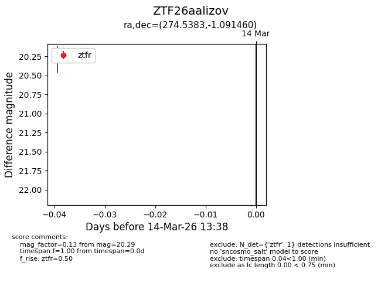
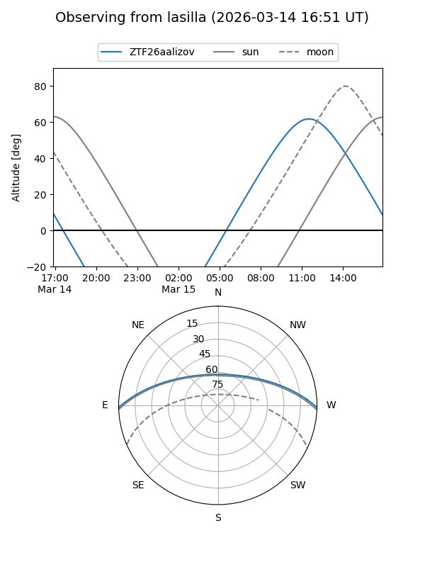
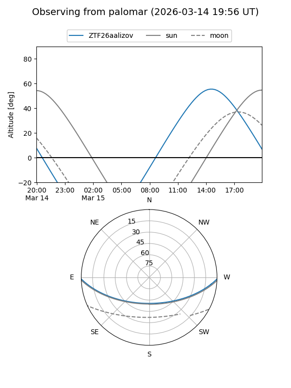

ZTF26aalizov
Target ZTF26aalizov at 2026-03-14 13:40
Aliases and brokers:
FINK: link
Lasair: link
ALeRCE: link
alt names
ZTF26aalizov (ztf,fink_ztf)
Coordinates:
equatorial (ra, dec) = 274.5383,-1.09146
equatorial (HMS+DMS) = 18:18:09.19,-01:05:29.26
galactic (l, b) = (28.1401,+6.89741)
Flags:
Photometry:
last ztfr=20.29
1 ztfr detections
Lightcurve

Visibility


Additional plots